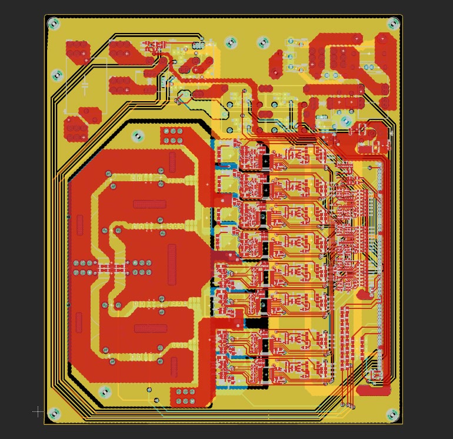

Three-level NPC solar inverter with GaN devices
Single-phase solar PV inverter, university project
A high-efficiency neutral-point-clamped inverter built on GaN power devices. I derived a cascaded dual-loop PI controller, validated it in PLECS, and wrote the full firmware stack on a TI C2000: CLA-based real-time control, a state machine, fault detection and SPI communication.
Early boards suffered from gate-drive noise, Miller-effect coupling and ground bounce. I traced each cause on the bench, fixed them with a full PCB redesign, and confirmed the cooling design with thermal simulation.
Built with TI C2000 and CLA, C, PLECS, Fusion 360, thermal simulation